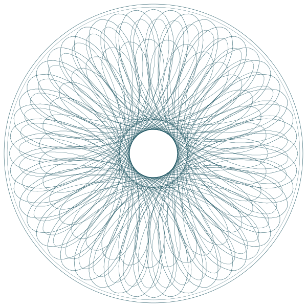
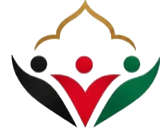
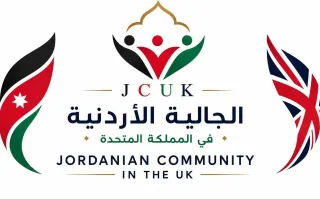
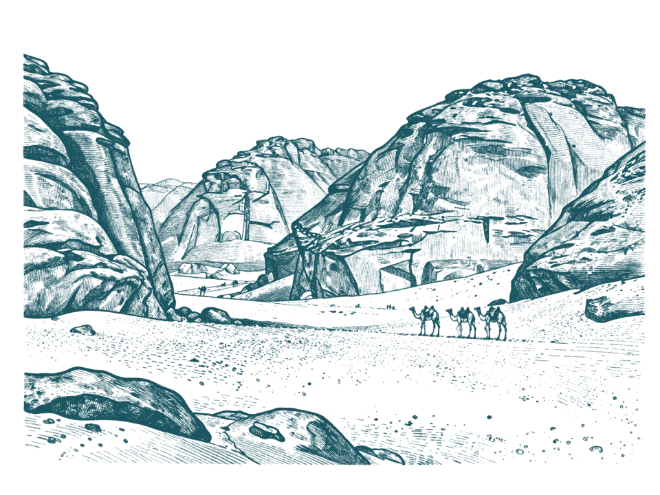

معًا نبني مجتمعًا أردنيًا مترابطًا ومؤثرًا في المملكة المتحدة
الجالية الأردنية في المملكة المتحدة منظمة غير ربحية يختار أعضاؤها مجلس إدارتها بالانتخاب، وتخدم الأردنيين في مختلف أنحاء بريطانيا. باب العضوية مفتوح الآن.
في مرحلة التأسيس، يقود الجالية مجلس تأسيسي من تسعة أعضاء حتى ينتخب الأعضاء أول مجلس إدارة خلال الأسبوع الذي يبدأ يوم الاثنين 23 تشرين الثاني 2026 (الموعد بانتظار التأكيد).
كيف تجري الانتخاباتوطنان، وجالية واحدة
تخدم الجالية الأردنيين في مختلف أنحاء بريطانيا، وتعزز حضورهم الثقافي والاجتماعي والمهني داخل المجتمع البريطاني.
يضع مجلس تأسيسي من تسعة أعضاء الأسس التنظيمية والإدارية لعقد أول جمعية عمومية وإجراء انتخابات لاختيار مجلس إدارة ينتخبه الأعضاء، بإشراف لجنة انتخابات مستقلة ومسؤول انتخابات، وينتهي دور المجلس التأسيسي عند استكمال العملية الانتخابية.
البرامج والخدمات
تُطلق تدريجياً بعد انتخاب مجلس الإدارة، وتكون متاحة لأعضاء الجالية والشركاء والمجموعات المرتبطة بها.
- الفعاليات الثقافية
- أنشطة واحتفالات تعزز الهوية الأردنية وتجمع أبناء الجالية.
- دروس اللغة العربية
- برامج للأطفال والشباب للحفاظ على اللغة العربية وتعزيز ارتباطهم بتراثهم.
- برامج الشباب
- دعم الشباب الأردني في التعليم وتنمية المهارات والاندماج الاجتماعي.
- تمكين المرأة
- مساحات آمنة وبرامج تطويرية لدعم المرأة الأردنية في المملكة المتحدة.
- خدمات دعم الجالية
- المشورة والإرشاد للأسر والقادمين الجدد في السكن والتعليم والصحة والعمل.
- اللقاءات الاجتماعية
- لقاءات دورية تجمع الأردنيين في مختلف مدن المملكة المتحدة.
- الشبكات المهنية
- منصات تتيح للمهنيين الأردنيين التواصل والتعاون.

SHOW THIS QR CODE AT CHECK-IN · أظهر الرمز عند الدخول
Jordanian Community in the UKالجالية الأردنية في المملكة المتحدة
عضويتك تأتي مع بطاقة رقمية خاصة بك
أربع فئات تبدأ من 5 جنيهات سنوياً. بعد الموافقة، تصلك بطاقتك الشخصية برقم العضوية ورمز الدخول عبر البريد الإلكتروني.
بطاقة توضيحية: الاسم والرقم ورمز QR غير حقيقية.
ترشّح لعضوية أول مجلس إدارة
أحد عشر مقعداً ينتخبها الأعضاء الكاملون خلال الأسبوع الذي يبدأ في 23 تشرين الثاني 2026 (الموعد بانتظار التأكيد).
- تأكد من أهليتكعضو كامل منذ 3 أشهر على الأقل، 21 عاماً فأكثر، ومقيم في المملكة المتحدة خلال الأشهر الاثني عشر الماضية.
- احصل على مُرشِّح ومُثنٍّيجب أن يكون كلاهما من الأعضاء الكاملين.
- قدّم طلب الترشحالنموذج مع سيرة ذاتية موجزة وورقة موقف لا تتجاوز 300 كلمة.
- يصوّت الأعضاءبإشراف لجنة انتخابات مستقلة ومسؤول انتخابات.
المجلس التأسيسي
تسعة أعضاء يقودون الجالية خلال مرحلة التأسيس.
البروفيسور الدكتور غسان العتيبي
رئيس المجلس
المستشار علي القدومي
نائب رئيس المجلس
الدكتور بلال زعيتر
أمين سر المجلس
المهندس عبد الرحمن أبوطير
عضو
البروفيسور الدكتور سامر بقاعين
عضو
السيد همّام القضاة
عضو
المهندس برت كوف
عضو
الدكتور عمر الرافعي
عضو
الدكتور باسل الأسمر
عضو

تنتمي الجالية لجميع الأردنيين المقيمين في المملكة المتحدة
انضم وسجّل وساهم في بناء مستقبل مشترك للجالية.